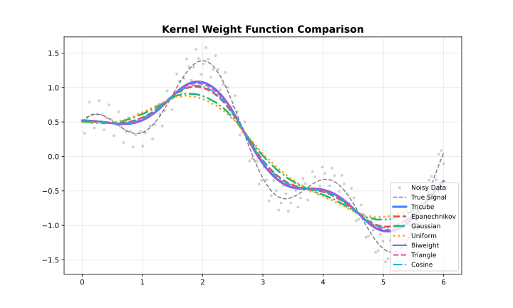

Overview
Kernel functions determine how neighbouring points contribute to each local fit. Points closer to the target receive higher weights.

Available Kernels
| Kernel | Efficiency | Smoothness | Support |
|---|---|---|---|
| Tricube | 0.998 | Very smooth | Compact |
| Epanechnikov | 1.000 | Smooth | Compact |
| Gaussian | 0.961 | Infinite | Unbounded |
| Biweight | 0.995 | Very smooth | Compact |
| Cosine | 0.999 | Smooth | Compact |
| Triangle | 0.989 | Moderate | Compact |
| Uniform | 0.943 | None | Compact |
Efficiency = AMISE relative to Epanechnikov (1.0 = optimal)
Tricube (Default)
Cleveland’s original choice. Best all-around performance.
Use when: Default choice for most applications.
library(rfastlowess)
set.seed(42)
x <- seq(0, 2 * pi, length.out = 100)
y <- sin(x) + rnorm(100, sd = 0.3)
model <- Lowess(weight_function = "tricube")
result <- fit(model, x, y)
cat("First 6 smoothed values (tricube kernel):\n")
#> First 6 smoothed values (tricube kernel):
print(head(result$y))
#> [1] 0.4862648 0.4942855 0.5026953 0.5114688 0.5205144 0.5296957Epanechnikov
Optimal in the AMISE sense. Slightly more angular than tricube.
Use when: Statistical optimality matters; compact support desired.
model <- Lowess(weight_function = "epanechnikov")
result <- fit(model, x, y)
cat("First 6 smoothed values (epanechnikov kernel):\n")
#> First 6 smoothed values (epanechnikov kernel):
print(head(result$y))
#> [1] 0.4980927 0.5058916 0.5141306 0.5214559 0.5283514 0.5346370Gaussian
Unbounded support — all points have non-zero weight.
Use when: Smooth transitions at boundaries; periodic data.
model <- Lowess(weight_function = "gaussian")
result <- fit(model, x, y)
cat("First 6 smoothed values (gaussian kernel):\n")
#> First 6 smoothed values (gaussian kernel):
print(head(result$y))
#> [1] 0.5254291 0.5307319 0.5394626 0.5378479 0.5402746 0.5415505Biweight
Very smooth, compact support.
Use when: Extra smoothness required; robust to heavy tails.
model <- Lowess(weight_function = "biweight")
result <- fit(model, x, y)
cat("First 6 smoothed values (biweight kernel):\n")
#> First 6 smoothed values (biweight kernel):
print(head(result$y))
#> [1] 0.4825590 0.4907817 0.4994624 0.5084966 0.5177105 0.5269509Cosine
Smooth, cosine-shaped weight. Efficient and compact.
Use when: Smooth result with compact support; slightly faster than biweight.
model <- Lowess(weight_function = "cosine")
result <- fit(model, x, y)
cat("First 6 smoothed values (cosine kernel):\n")
#> First 6 smoothed values (cosine kernel):
print(head(result$y))
#> [1] 0.4941485 0.5019299 0.5101566 0.5176921 0.5249038 0.5316128Triangle
Linear decrease from centre. Simple, moderate smoothness.
Use when: Simple linear decay desired; interpretability matters.
model <- Lowess(weight_function = "triangle")
result <- fit(model, x, y)
cat("First 6 smoothed values (triangle kernel):\n")
#> First 6 smoothed values (triangle kernel):
print(head(result$y))
#> [1] 0.4813591 0.4887843 0.4970441 0.5052547 0.5134863 0.5216037Uniform
Flat weight — equal contribution within the neighbourhood.
Use when: Unweighted local regression; baseline comparisons.
model <- Lowess(weight_function = "uniform")
result <- fit(model, x, y)
cat("First 6 smoothed values (uniform kernel):\n")
#> First 6 smoothed values (uniform kernel):
print(head(result$y))
#> [1] 0.5375980 0.5415992 0.5503490 0.5447180 0.5450620 0.5440319
sessionInfo()
#> R version 4.6.1 (2026-06-24)
#> Platform: x86_64-pc-linux-gnu
#> Running under: Ubuntu 24.04.4 LTS
#>
#> Matrix products: default
#> BLAS: /usr/lib/x86_64-linux-gnu/openblas-pthread/libblas.so.3
#> LAPACK: /usr/lib/x86_64-linux-gnu/openblas-pthread/libopenblasp-r0.3.26.so; LAPACK version 3.12.0
#>
#> locale:
#> [1] LC_CTYPE=C.UTF-8 LC_NUMERIC=C LC_TIME=C.UTF-8
#> [4] LC_COLLATE=C.UTF-8 LC_MONETARY=C.UTF-8 LC_MESSAGES=C.UTF-8
#> [7] LC_PAPER=C.UTF-8 LC_NAME=C LC_ADDRESS=C
#> [10] LC_TELEPHONE=C LC_MEASUREMENT=C.UTF-8 LC_IDENTIFICATION=C
#>
#> time zone: UTC
#> tzcode source: system (glibc)
#>
#> attached base packages:
#> [1] stats graphics grDevices utils datasets methods base
#>
#> other attached packages:
#> [1] rfastlowess_3.2.0
#>
#> loaded via a namespace (and not attached):
#> [1] digest_0.6.39 desc_1.4.3 R6_2.6.1 fastmap_1.2.0
#> [5] xfun_0.60 cachem_1.1.0 knitr_1.51 htmltools_0.5.9
#> [9] rmarkdown_2.31 lifecycle_1.0.5 cli_3.6.6 sass_0.4.10
#> [13] pkgdown_2.2.1 textshaping_1.0.5 jquerylib_0.1.4 systemfonts_1.3.2
#> [17] compiler_4.6.1 tools_4.6.1 ragg_1.5.2 bslib_0.12.0
#> [21] evaluate_1.0.5 yaml_2.3.12 otel_0.2.0 jsonlite_2.0.0
#> [25] rlang_1.3.0 fs_2.1.0 htmlwidgets_1.6.4